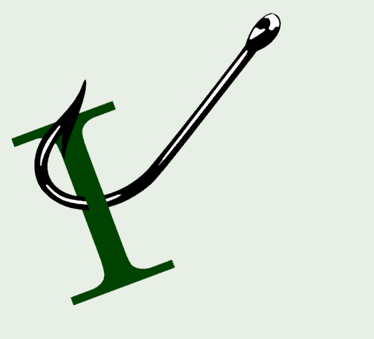

Security
How passkeys work by Cassidy Williams
Open-source
Securing the AI software supply chain: Security results across 67 open source projects by Gregg Cochran
Domain-Driven Design, CQRS
Read Replicas Are NOT CQRS (Stop Confusing This) by Derek Comartin
Software Architecture
Where Vertical Slices Fit Inside the Modular Monolith Architecture by Milan Jovanović
.NET
Using the Azure Service Bus Emulator for Local Wolverine Development by Jeremy D. Miller
Validating PowerShell script syntax in GitHub Actions workflows by Gérald Barré
EF Core HasQueryFilter II by Karen Payne
Creating standard and "observable" instruments by Andrew Lock
Custom Agents in Visual Studio: Built in and Build-Your-Own agents by Rhea Patel
REST/APIs
Is REST Dead... Again? by Alexander Karan
Azure
JMESPath support comes to azd JSON output by Scott Addie
AI
Shortwave: AI fatigue and the long middle of adoption by Mike Amundsen
Microsoft's backing off on its "AI everywhere" plan is too little, too late by Simon Batt
Agentic AI fails without an architecture of flow to eliminate the friction tax by David Smith
comments powered by Disqus